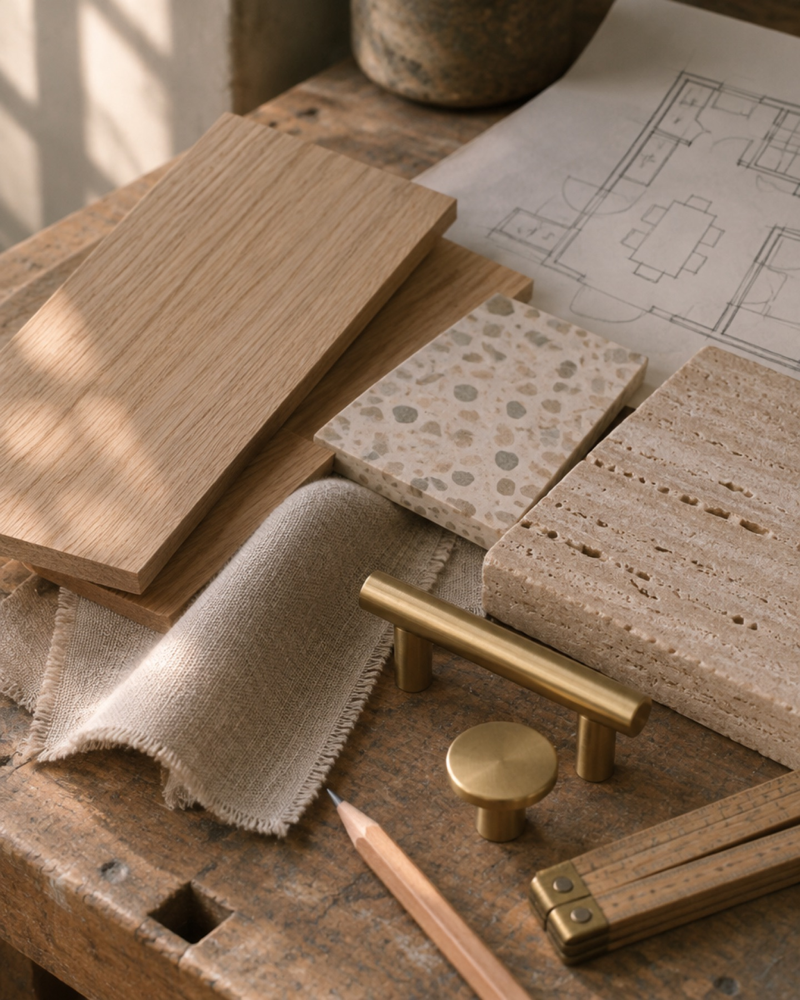
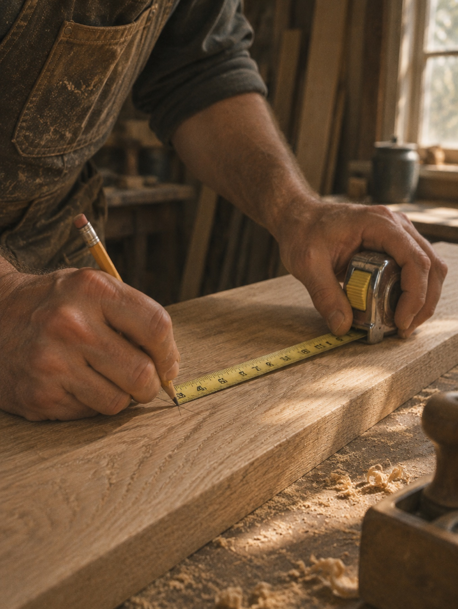

걸레받이 숨김 마감
벽보다 3mm 들어간 걸레받이. 바닥과 벽 사이에 그림자 한 줄만 남겨, 방이 한 뼘 넓어 보여요.
현장 목수로 11년, 인테리어 회사를 차린 지 12년. 지금도 대표가 직접 대패를 잡습니다.

보기 좋은 집보다 오래 쓰기 좋은 집을 만들고 싶었어요. 10년 뒤에도 문이 처지지 않고, 서랍이 부드럽게 닫히는 집.
인테리어 견적서에는 "목공 일식"이라는 한 줄로 적히는 일이 있습니다. 그 한 줄 안에 문틀 수평, 걸레받이 이음, 몰딩 각도, 수납장 뒷판 두께가 다 들어 있어요. 저희는 그 한 줄을 서른 줄로 풀어서 견적서에 적습니다.
그래서 현장 수를 늘리지 않습니다. 한 달에 세 집. 대표가 모든 현장에 매주 두 번 이상 갑니다.
카드 귀퉁이에 마우스를 올려보세요. 접힌 도면이 펴집니다.
벽보다 3mm 들어간 걸레받이. 바닥과 벽 사이에 그림자 한 줄만 남겨, 방이 한 뼘 넓어 보여요.
문틀 모서리를 45도로 잘라 맞춥니다. 이음매가 보이지 않고, 몇 년이 지나도 벌어지지 않아요.
붙박이장 몸통까지 18mm 자작합판. 뒷판도 9mm로 바꿔 서랍이 휘거나 처지지 않습니다.
사는 사람, 예산, 꼭 바꾸고 싶은 것 세 가지를 여쭤봐요.
1일대표 목수가 직접 방문해 2시간 동안 재고, 사진 200장을 찍습니다.
2시간평면·전개도와 함께 항목별로 풀어 쓴 견적서를 드려요. 수정은 횟수 제한 없이.
1–2주성수 작업실에서 실제 샘플을 만져보고 정합니다. 사진으로 고르지 않아요.
1주매일 저녁 그날 한 일과 사진을 카카오톡으로 보내드려요. 이웃 동의서도 저희가 받습니다.
2–8주입주 한 달 뒤, 일 년 뒤. 문짝 조정과 실리콘 보수를 미리 해드립니다.
2년목수 셋, 설계 둘, 현장 관리 하나, 고객 응대 하나. 외주 팀은 전기·설비만 오래 함께한 분들께 맡깁니다.

성수역 3번 출구에서 걸어서 6분. 샘플 구경은 예약 없이 오셔도 괜찮아요.
화–토 10시부터 6시. 커피 한 잔 드리고, 오크 마루와 트래버틴을 직접 보여드릴게요.
방문 예약